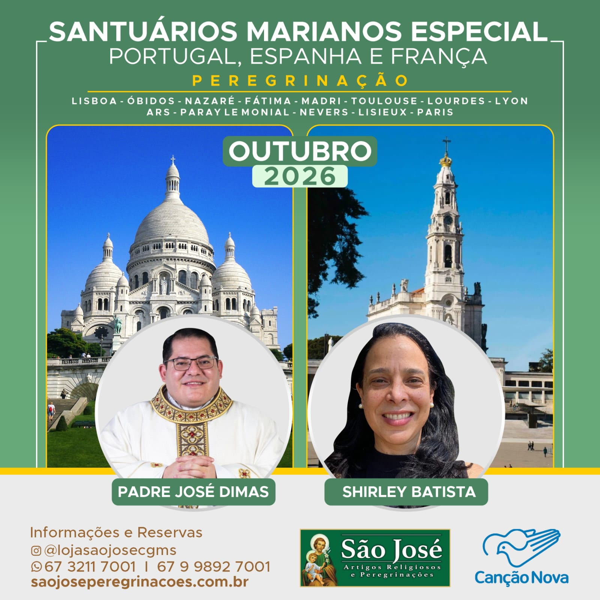

Em horário programado APRESENTAÇÃO NO AEROPORTO PARA EMBARQUE COM DESTINO A LISBOA COM AS DEVIDAS CONEXÕES.
Chegada e recepção no aeroporto. Tempo livre para compras. Hospedagem, jantar e pernoite.
Após o café da manhã, saída para visitar a cidade de Óbidos, com pitorescas ruas estreitas, morada de romanos, árabes e reis de Portugal. Seguimos para Nazaré, cidade dos pescadores, onde visitaremos a Igreja de Nossa Senhora de Nazaré. Continuação para Fátima. Chegada e Hospedagem.
Após o café da manhã, participamos da celebração da Santa Missa. Após a celebração, saída para visitar os locais relacionados com as aparições de Nossa Senhora em 1917 e com a vida dos pastorinhos aos quais ela apareceu (casa de Lúcia. Jantar e pernoite.
Após o café da manhã, saída para o aeroporto de Lisboa. Chegada em Madri, e visita pela cidade conhecendo a Gran Via, Cibelis, Porta do Sol, passeiro da castelhana e prado. Chegada no hotel. Jantar e pernoite.
Café da manhã no hotel. Jantar e pernoite.
Após o café da manhã, saída para o aeroporto. Chegada em Toulouse, seguimos para Lourdes. Hospedagem, jantar e pernoite.
Café da manhã no hotel. Dia inteiro participando das atividades religiosas no Santuário de Nossa Senhora de Lourdes (Missa, terço, procissão luminosa, tempo livre para oração pessoal)
Após o café da manhã, saída para Lyon. Chegada e Hospedagem. Jantar e pernoite.
Após o café da manhã, saída para Ars, onde visitaremos o Santuário de São João Maria Vianey, o Cura Dar´s, padroeiro dos sacerdotes. Seguimos para Paray Le Monial, onde conheceremos a Basílica do Sagrado Coração de Jesus, e a capela onde aconteceu a aparição de Jesus em 1675 a Santa Margarida Maria Alacoque. Hospedagem, jantar e pernoite.
Após o café da manhã, seguimos para Nevers, situada às margens do rio loire. Visita ao Convento de Saint Gildart, onde se encontra o corpo intacto de Santa Bernadete Soubirous. Continuação para Paris. Hospedagem, jantar em pernoite.
Após o café da manhã, no hotel, seguiremos até Lisieux, onde conheceremos a história de Santa Teresinha do Menino Jesus. Missa e visita ao mosteiro, Basílica, e a casa onde ela viveu. Retorno para Paris. Chegada no hotel e jantar.
Café da manhã no hotel. Visita de Paris, percorrendo suas principais avenidas, praças e bairros tais como: campos eliseos, arco do triunfo, praça da concórdia, Notre Dame, torre Eiffel. Visitaremos a Basílica do Sagrado Coração de Jesus, Sacré Coeur. Retorno para o hotel, jantar e pernoite.
Café da manhã no hotel. Visita a Capela da Medalha Milagrosa. Retorno para o hotel, jantar e pernoite.
Após o café da manhã, no hotel, Em horário programado traslado ao aeroporto. Embarque com as devidas conexões para Guarulhos.
Desembarque em Guarulhos e Em horário programado voo de conexão para a sua capital. Fim dos nossos serviços.